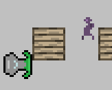

Here, you can find a list of games that I never finished.
| Prototypes | |||||||
|---|---|---|---|---|---|---|---|
| Screenshot | Name | Description | Percent Complete | Release date | Download | Mac? | Source? |
 |
Mystical Rug | A Magic Carpet Demake done in the style of the original Gameboy. | ~5% | Unreleased. | Here! | Yes! | Lost. |
|  | Lemmpong | A mix of Lemmings and Pong. | Done. | October 8, 2012 | Here! | Yes! | No. |
| Caveman | A not-game with a real-time day/night and seasonal system. You need to re-light your fire. Made for MiniLD #37. | Done. | September 25, 2012 | Here! | No. | Included. | |
 |
These Tranquil Waters Shall Not Hold | A relaxing adventure through the deep sea in a blue submarine. Made for GMCJam #6. | Done. | April 30, 2012 | Here! | Yes! | No. |
 |
Interstellar Planet-Ship Adventures: The Search for… $@#% Aliens!!!!!! | An experimental strategy/arcade hybrid made for Ludum Dare 23. Be sure to read the how-to before playing! | Done, but buggy. | April 23, 2012 | Here! | Yes! (How-to Guide) | Included with Windows version. |
| Rabbiteers | My first foray into procedural generation. Find all the eggs and bring them back in time for easter! | Done. | April 9, 2012 | Here! | No. | No. | |
| N/A | Burn, Witch, Burn! | Save yourself from being burned alive by angry peasants by typing spells out! | 0h Game Jam submission | Unsure. | Here! | No. | No. |
 |
Little Hobo Planet | A 2 or 4 player party game created off of a name from a Video Game Name Generator. | ~40% | Unsure. | Here! | No. | Lost. |
 |
Color Defense | An experimental action/tower-defense game where you drain your enemies' color to acquire resources. | Prototype | Unsure. | Here! | No. | No. |
 |
The Being Santa Holiday Games Pack | A holiday pack of random, ridiculous games about being Santa. | Finished! | Unsure. | Play here! Or download here! |
Yes, Flash game. | Lost. |
 |
The World Isn't...AA! | An arcade game about the Mayans being taken over before they could finish their calendar. Run from the invaders! | Finished! | Unsure. | Play here! High Scores! |
Yes, Flash game. | Lost. |
 |
Don't Shoot Yourself! | An experimental multiplayer shooter where the other player controls when you shoot. | Prototype | Unsure. | Play here! | Yes, Flash game. | Lost. |
 |
The Crying Woods | A short game, originally made for the TIGSource Fall Festival competition, that was never finished. You're chasing a squonk. The webpage explains in more detail. | Prototype | Unsure. | Here! | No. | No. |
| N/A | Isolation | A short game inspired by Pick Up the Phone Booth and Aisle. You locked yourself in a panic room and can't get out. | Unfinished | Unsure. | Play here! | Yes, browser game. | Lost. |
Copyright Matt Chelen 2012